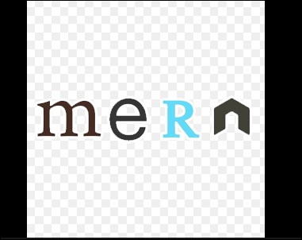

Hello, My name is Sagar
and I am a Full stack Web Developer

Work Experience


HTML Developer
HTML is skelton of a
HTML is the standard markup language for creating Web.
HTML describes the structure of a Web page.
HTML is the standard markup language for creating Web.
HTML describes the structure of a Web page.

Python Developer
Python is an interpreted, object-oriented, high-level programming language with dynamic
semantics developed by Guido van Rossum.
It was originally released in 1991.
It was originally released in 1991.

MERN Developer
The MERN stack combines MongoDB, Express.js, React.js, and Node.js to create a powerful and
efficient web development framework.